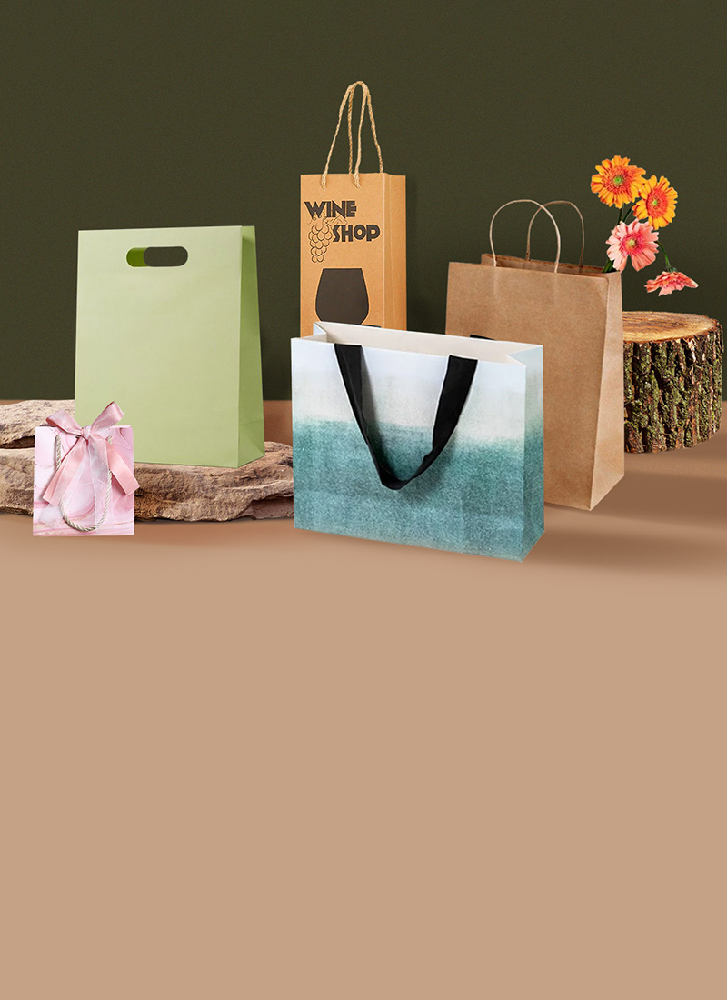

Un marketplace curado para marcas que entienden el valor del diseño táctil, modular y narrativo.
Unboxing reúne módulos curados: cajas plegables, etiquetas textiles, formatos rígidos y soluciones sustentables.
Sí. Cada módulo puede adaptarse a tu estética, materiales y narrativa de marca.
Explorás el catálogo, seleccionás módulos, y conectás directamente con proveedores especializados.
Diseño, calidad de materiales, escalabilidad y coherencia estética. Cada proveedor es evaluado por nuestro equipo curador.